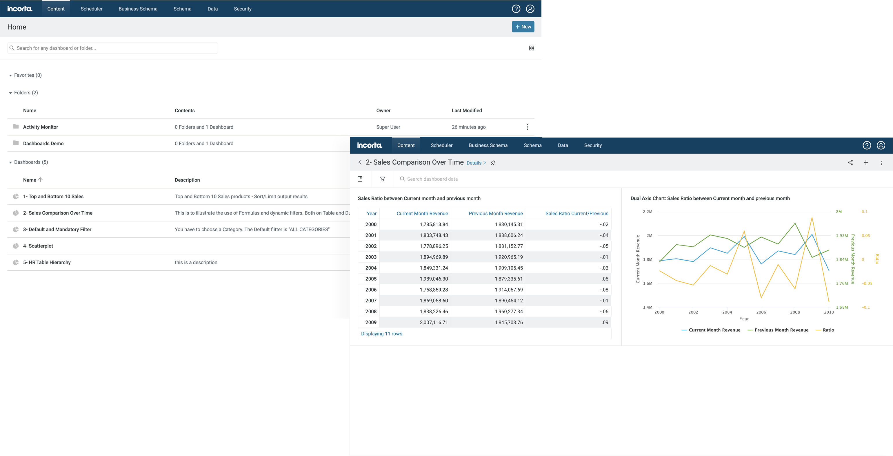
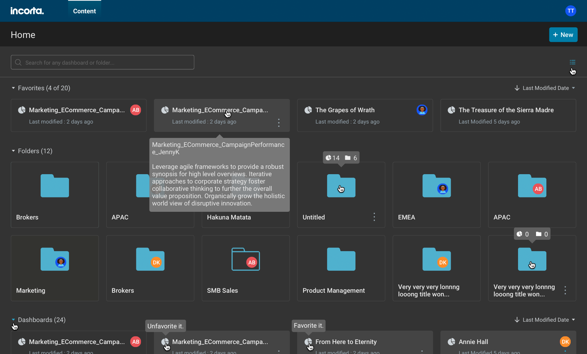
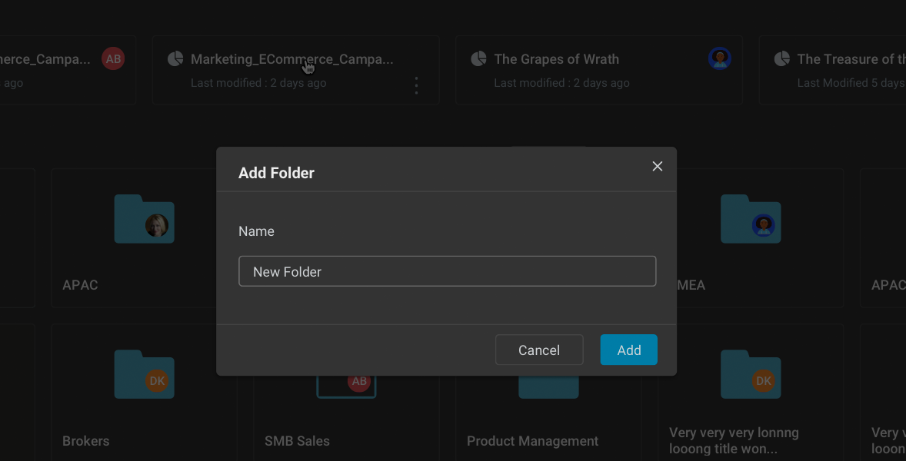
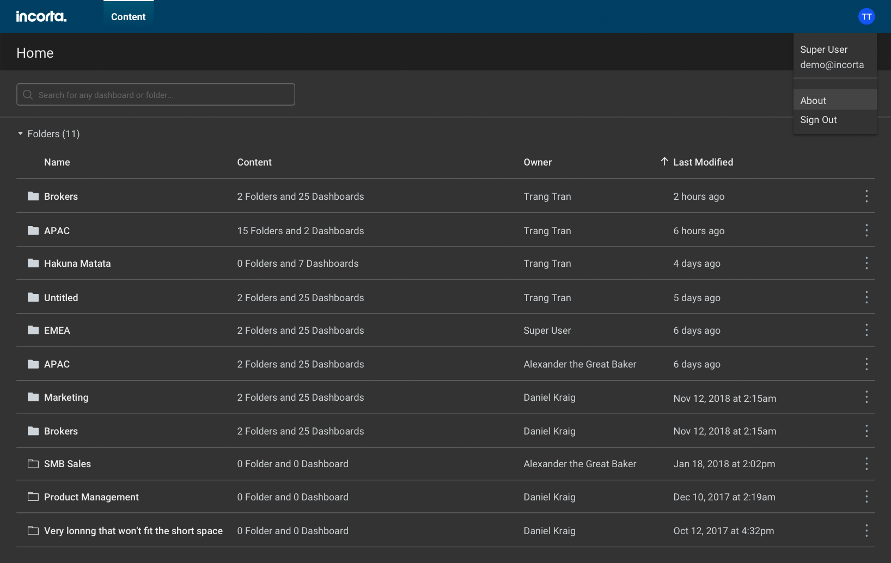
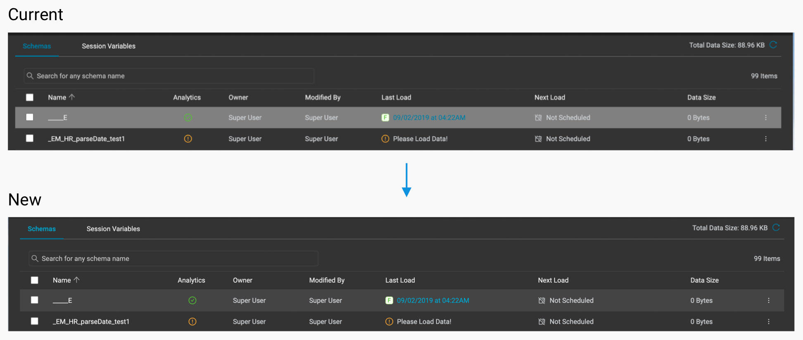
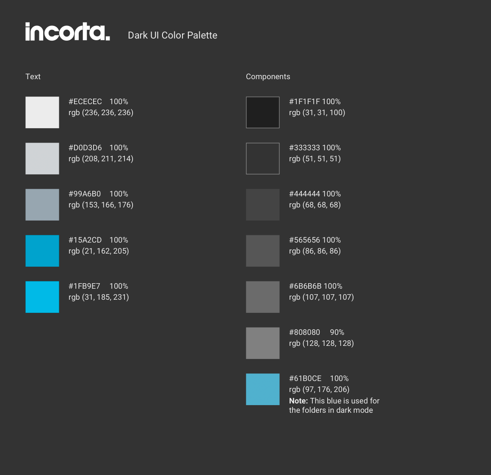
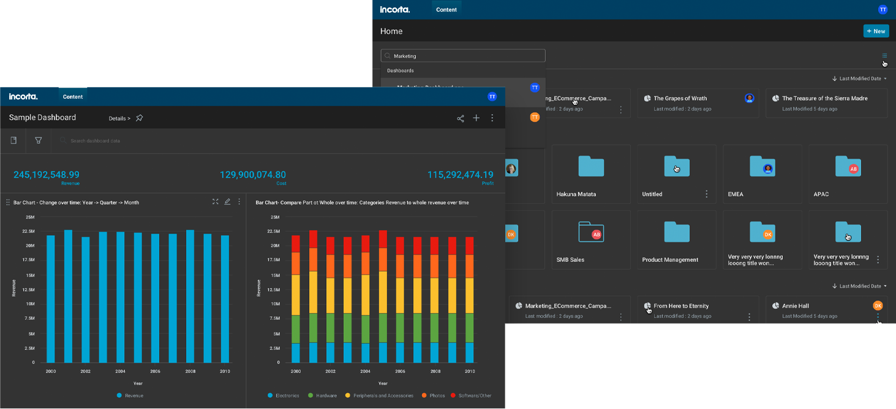

Incorta: Dark Mode
Led the creation of Dark Mode for the Incorta app

Trang Tran

About Incorta
Incorta is a hyper-converged data analytics app that removes the ETL process in data warehousing and lets users make use of their data fast. Our app allows users to bring in data to create connections between tables, and ultimately, create data visualizations so that businesses can make key decisions.
The problem
The schema developers and data analysts spend hours looking at hundreds of rows of data. One of Incorta's most engaged users present their dashboards to executives in a room with dark walls. They claimed the white background is blinding, and said having a dark theme would help their analysts calibrate to looking at hundreds of rows of data. Compared to the other roadmap items we had, this feature was considered a small effort for a huge return. Since it did not rely on the server team but instead, close collaboration with the front-end team, it was something that could be turned over quickly for the next release.
I led the UX design efforts and worked with several engineers for this feature. There was very little guidance from upper management, so I had to do comparative analyses of other tools.
Why dark mode?
The customers that wanted this feature are schema developers and data analysts. They create SQL queries to join tables and create dashboards for others to consume, respectively. Many of them spend hours looking at huge amounts of data, which can result in a lot of strain on their eyes. The PMs were also told that some users already use dark mode in their other apps and having to switch between Incorta's app made it hard for users to adjust their eyes.
Persona: The Schema Developer (Data Scientist)
40 years old
Data Scientist
On a regular day, Chris will bring data into his Incorta environment. He then spends hours creating schemas by querying or migrating columns. A lot of his tasks are tedious but require a lot of attention.
Wants to be able to create schemas without errors and eye strain.
Uses Dark Mode when coding in other editors. Very attentive to small details, but gets easily distracted.
Dark Mode as a lab feature
We planned for Dark Mode to be introduced as a lab feature, which means that feature is in beta and that admins would have to make the option available to their users. Before rolling it out to the public, we would test it out in our UX Research sessions with participants. Initially, I thought that creating a dark mode wasn't going to be that difficult.
Wrong. I was only poking around the current UI with the inspection tool to test said invert changes, only to realize that there are so many styles on light interfaces that don't do well in a dark mode.
Some things to think about when creating Dark Mode:
I spent a few hours researching best practices in Dark Mode and looked for examples of good implementation, on both desktop and mobile. I tried to map out every possible Incorta scenario in Dark Mode.
I also knew that anything style I defined now would, no doubt, change in the future because we were designing brand new features and still moving things over to React, in parallel. But for the time being, I had to figure out something that was scalable.
Exploration and prototyping
Using the Incorta Design Library, I explored variations of dark colors to accommodate all the components. The most effective way was to invert the colors and then modifying them slightly. Our goal for Dark Mode was to make sure everything is consistent, accessible, and pleasant to use. Once I felt that the style definitions were foolproof, the high fidelity prototype was then handed to the front-end team to implement in a test build, which took a week.
I tried testing out the colors and styles with every interaction and user case possible
The scrim had to be the perfect opacity and color to show the layer underneath
Exploring the dark color combinations for the listing page
Making some more tweaks for Dark Mode
As we were testing out Dark Mode in an internal build, we came across some overlooked scenarios where the proposed colors were difficult to read. For example, the usual Incorta blue hyperlink was hard to make out on a grey background. I was unable to see these instances because I couldn't simulate them in my personal environment and build. I made the design changes in and the engineering team promptly updated the UI.
The grey was changed to darker shade in order to show the hyperlink better
The new dark mode palette
Incorta Dark Mode: for the cool and daring!
Demoing Dark Mode internally
We held a New Features Demo meeting where we presented internally what's coming in the next release. The engineering team demonstrated how to turn on Dark Mode to internal stakeholders, including solutions architects, pre-sales, and sales engineers. We received a ton of compliments from pre-sales and people were surprised that Incorta decided to roll this out.
Testing Dark Mode in Incorta's UX Lab
Next up, showcased Dark Mode to our UX Lab participants. As first time Incorta users, they were able to carry out the tasks given to them. We used this opportunity to see if there were any inconsistencies in the color palettes, but there was no negative feedback besides the fact that some of our pages looked different from each other (we were still migrating everything from Angular to React). The feature was then rolled out to all users in the latest release as a Lab Feature so that users can try it out and give feedback.
How to create a dark mode for users
Researched current trends in various dark mode apps and synced with PMs to learn about users
Explored and tested different colors in each use case of the app
Redesigned prototype to address hard-to-see scenarios
Dark Mode made into Lab Feature to get user feedback while in Beta
Dark Mode Phase 1 Complete
The customer who requested the feature was impressed with the new look. Many of their users enjoyed the feature and said it helped them to look at their data longer without strain on their eyes. Dark Mode was rolled out to all customers as a Lab Feature, and even our internal users began using it. Now that Dark Mode is successful and has a decent amount of users, we can now solicit feedback from a larger sample about how we can improve it. We have a few pages that are being migrated to React, and will eventually have to be tested.
Incorta Playlist
Recently, our VP of Product came up with an idea of the "Incorta Playlist". This new feature would allow users to set up their dashboard visualizations to appear in an automated slideshow/playlist. According to our VP, a customer requested this feature so that they can display important KPIs on huge monitors. Even though Dark Mode started off as an exploration, it became integrated into a roadmap item to expand into the upcoming Incorta Playlist.
The takeaway: thoughts and lessons
Most pre-sales and sales engineers were surprised that Incorta had the bandwidth to create Dark Mode because we had other urgent customer requests. Fortunately, we had a lot of front-end engineering resources and were able to squeeze in this request without any difficulties. I understand that there are people who say Dark Mode is a gimmick, but I use Dark Mode for all of my devices. It's nice to know that this feature is doing some good for our users and that it's being expanded upon.